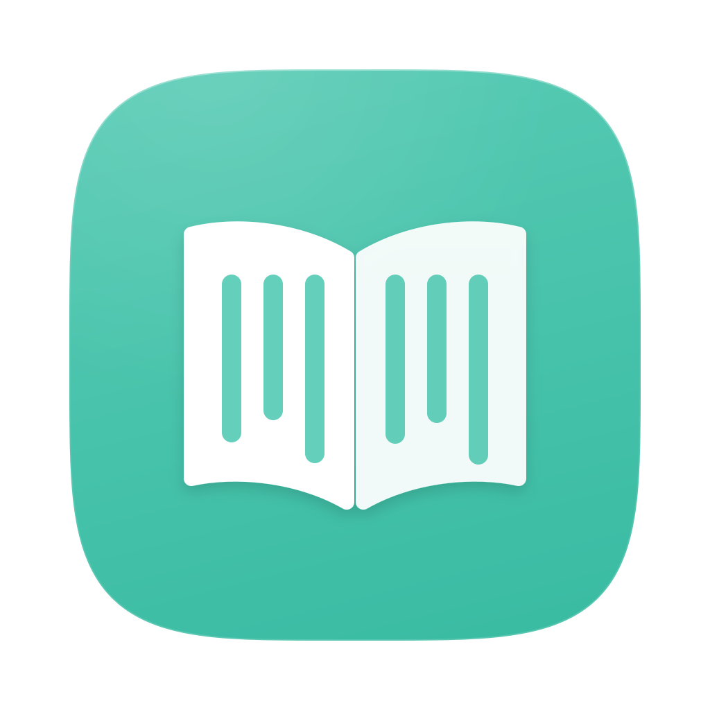

Aomidori
eBook and comic reader for macOS
A light, snappy EPUB reader that works like a web page: each chapter scrolls vertically, the arrow keys change chapter, and your CSS always has the last word.
Download Aomidori
macOS 27 or later, Apple Silicon only
Installing
- Unzip the download and drag Aomidori to Applications.
- On first launch macOS stops it, as it doesn't come from the App Store: open System Settings › Privacy & Security and choose Open Anyway.
- From then on, updates arrive by themselves.
One chapter, one page
Each chapter scrolls vertically like a web page, and the arrow keys change chapter. No pagination, no modes.
Your CSS rules
Styles reload as soon as you save them, and one key lets them override the book's whole typography.
Text that really grows
Plus and minus win over any CSS limit; pictures stay as they are.
Your font, all the way
Any installed family or a TTF, OTF or WOFF file, with weight, style, variable axes and typographic features.
CSS Playground
Write a style with a live preview, and try it in the reader at once.
Native and light
Swift and AppKit for Apple Silicon, Liquid Glass, native tabs, light and dark themes.
Find it, and come back
Search the whole book, keep bookmarks, and after a note go back to the exact line you were reading.
Your reading stays yours
Pages never load anything from the network: no book can tell anyone when or where you read it.
Comics too
CBZ and CBR files open like a chapter: the pages one below the other, as wide as the window.